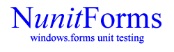

News
Documentation
License
Download
Source Code
NUnit
NMock
SourceForge
Source Code
The latest NUnitForms source code is available in cvs from SourceForge.
Tortoise CVS is a great tool for accessing this.
| Server | cvs.sourceforge.net |
| Method | pserver |
| User Name | anonymous |
| Repository | /cvsroot/nunitforms |
| Module | NUnitForms |
You can also browse the source code here.
Contributing
-
Post the code to the developer mailing list or simply email it to me.
-
Write unit tests for any new features that you are adding.
-
Post a message to the list (or in the email you send me) assigning copyright of the code to Luke Maxon. (I will of course acknowledge your contribution any way you like but need to be able to release it without worries.)
-
It would be best if your patch is done against the most recent version of the code in CVS because it is changing quickly.
Thoughts? Ideas? How would you prefer to contribute?